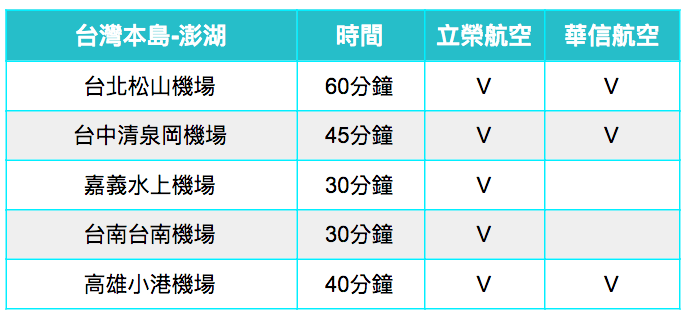
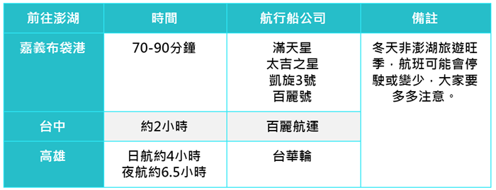

特色景點
在地美食
- 頻道關鍵字 - 「旅遊。美食。生活」 台灣旅遊/國內旅遊/國外旅遊/東南亞旅遊 美食/咖啡廳/酒吧 青年旅館/背包客/自助旅行 登山/露營
交通資訊
從時間以及自在度來看，搭飛機前往澎湖是相較舒適的交通方式。台灣到澎湖本島的飛機航線， 從北的台北松山機場，至南的高雄小港機場，立榮航空與華信航空都有營運。飛往澎湖票價約落在旺季機票票價約2,500～3,000左右，而其中就屬立榮航空班次最多；另外在航行的時間上，不管從台灣的哪個地點出發，都能在一個小時內抵達澎湖機場。 編輯小提醒： 遇上澎湖花火節機位常常一位難求，建議碰到旺季可以提前兩個月左右預訂喔！ 澎湖機場屬於軍民合一機場，是禁止拍攝、錄影的喔！（還有台中清泉崗機場和台南機場也是。）
若是想省錢時間也還算充裕的人也可以選擇搭船，但是搭船需要考量到當日的天氣以及海況喔，從嘉義布袋、台中港、高雄前往澎湖的港口會比較固定，但以航班固定性來說，嘉義跟台中會比較方便喔！不僅比較近，行駛的船隻也比較多喔！